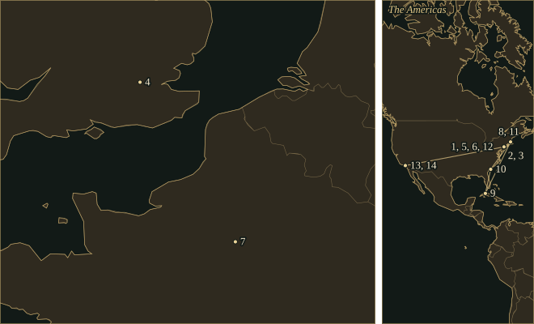

GeorgeGershwin
Composer who brought Broadway rhythms into the concerto, known for a clarinet slide.
- Trained
- Piano with Charles Hambitzer; theory with Edward Kilenyi; later composition studies with Joseph Schillinger
- At work
- Tin Pan Alley song plugger from 1914 · Broadway · concert pianist · Hollywood from 1936
- Partners
- Ira Gershwin, lyrics · Ferde Grofé, Rhapsody orchestration · DuBose and Dorothy Heyward, Porgy and Bess
- Output
- Songs and stage musicals; two rhapsodies, a piano concerto, orchestral pieces, piano preludes and an opera
“This new piece, really a rhapsodic ballet, is written very freely and is the most modern music I have yet attempted.”
Life
In May 1914 a fifteen-year-old pianist went to work for Jerome H. Remick and Company in New York, playing songs to sell them. George Gershwin earned fifteen dollars a week. He could sight-read, transpose and keep a tune attractive through another repetition. Four years earlier his family had bought a piano for his elder brother Ira, and George surprised them by sitting down and playing it; he had been experimenting on the piano at a friend’s house. He was born in Brooklyn on 26 September 1898 to Russian-Jewish immigrants. His first professional work was at a publisher’s keyboard, where a song had to sell to a customer standing beside the piano.
Charles Hambitzer was his piano teacher. Gershwin later called him “the first great musical influence in my life”. He attended concerts by pianists including Leopold Godowsky and Josef Lhévinne, and studied theory with Edward Kilenyi. After leaving school he went on studying, and in the summer of 1921 he took courses in Romantic music and elementary orchestration at Columbia University.
1919–24Swanee and songs with Ira
In 1919 he and Irving Caesar wrote Swanee. Its first appearance in the Capitol Revue attracted little attention; Al Jolson heard it at a party, put it into Sinbad, and made it a hit. Gershwin had already moved from song plugging to theatre rehearsals and a job as a staff composer at T. B. Harms. In December 1924 Lady, Be Good! opened, the first complete Broadway show by George and Ira together. Fred and Adele Astaire danced in it.
George usually supplied Ira with music first. For I Got Rhythm, written for Girl Crazy in 1930, Ira spent more than two weeks trying rhymes before deciding that the refrain worked better with very few. The music was built on a four-note figure by George. Ethel Merman introduced the song at the Alvin Theatre, with Ginger Rogers elsewhere in the cast. In the pit were young musicians including Benny Goodman and Gene Krupa.
1924Rhapsody in Blue, Aeolian Hall
On 4 January 1924 the New York Tribune announced that Gershwin was writing a jazz concerto for Paul Whiteman. The concert was on 12 February, and the piece had not yet been written. Gershwin worked in a two-piano score and handed the pages to Whiteman’s arranger Ferde Grofé, who knew the players and made the band parts. At Aeolian Hall, Gershwin played the piano while Whiteman conducted Rhapsody in Blue.
The opening was partly the work of the clarinettist Ross Gorman. Gershwin had written a rising run; Gorman turned it into the sliding ascent that reaches a high concert B♭ after a low trill. Piano solos alternate with passages for the band, and the piece includes a broad singing tune. On 10 June Gershwin and Whiteman recorded it for Victor. About a third of the score was cut to fit the two record sides.
1925–32Concerto in F, An American in Paris, Cuban Overture
Walter Damrosch commissioned the Concerto in F for the New York Symphony Society and conducted its première at Carnegie Hall on 3 December 1925, with Gershwin as soloist. “The first movement employs the Charleston rhythm,” Gershwin explained in his note on the concerto. The movement opens with percussion and uses displaced accents, bringing the dance into a three-movement concert work. The slow movement begins with winds and brass; a muted trumpet enters before the piano. Late in that movement, piano and flute together recall the opening introduction.
In Paris in 1928 Gershwin shopped for taxi horns. He had begun thinking about An American in Paris on an earlier visit, and the horns allowed the city’s traffic to be heard in the orchestra. In Musical America that August he called the score “the most modern music I have yet attempted”. He also described its homesick American drinking in a café, succumbing to the blues and then going back out into the street. Damrosch conducted the première in December. The work has no solo piano part.
Gershwin took a holiday in Havana in February 1932 and came back with another set of instruments. For the Cuban Overture, first performed that August under the title Rumba, he placed claves, maracas, güiro and bongos at the front of the orchestra, directly in front of the conductor. That year he also began studying with Joseph Schillinger, whose teaching used mathematical patterns and graph paper. Of Thee I Sing, the Gershwins’ political musical with George S. Kaufman and Morrie Ryskind, won the Pulitzer Prize for drama. The award named the book writers and Ira, but not the composer.
1935Porgy and Bess
Gershwin read DuBose Heyward’s Porgy in 1926. Serious work on the opera began in 1933. In the summer of 1934 he stayed on Folly Beach, near Charleston, where the Heywards also had a cottage. DuBose prepared the libretto and worked with Ira on the lyrics, and the opera drew on Dorothy Heyward’s stage adaptation. The score includes lullaby, street cries, prayer and dance in its setting of Catfish Row. Summertime is sung by a woman to a child; My Man’s Gone Now is sung by a widow.
Porgy and Bess opened in Boston on 30 September 1935 and in New York on 10 October. Todd Duncan and Anne Brown played the title roles; the Eva Jessye Choir was among the named original performers. The production ran for 124 Broadway performances and lost money. Its Black cast was admired, and its portrayal of Black life drew objections to stereotyping. On the 1936 tour, a protest by the cast forced Washington’s National Theatre to admit an integrated audience.
1936–37The last film songs
George, Ira and Ira’s wife Leonore moved to Los Angeles in August 1936. The brothers wrote for films including Shall We Dance, with Fred Astaire and Ginger Rogers. Its songs include They Can’t Take That Away from Me and Let’s Call the Whole Thing Off, a duet built on small differences in pronunciation. Gershwin was working on The Goldwyn Follies when he died of a brain tumour on 11 July 1937. He was thirty-eight. Ira lived until 1983. He continued to work with other composers and preserved his brother’s manuscripts.
Places

All 14 places, with sources
- Brooklyn, New York · 26 September 1898 · born
Born in Brooklyn to Russian-Jewish immigrant parents. The map point marks the borough and does not mark a particular birth address.
Library of Congress, George and Ira Gershwin Collection finding aid, biographical note, p. 5
- Manhattan, New York · May 1914 – 17 March 1917 · worked
Left school to work as a song plugger for Jerome H. Remick and Company, earning fifteen dollars a week; left the job in March 1917.
Library of Congress finding aid, biographical note, pp. 6–7
- Columbia University, New York · 1921 · studied
Took summer courses in nineteenth-century Romantic music and elementary orchestration with Rossetter G. Cole.
- London · April 1923 · worked
Made his first European visit to supervise The Rainbow, which opened at the Empire Theatre on 3 April. The Rainbow.
- New York · 12 February 1924 · premiere
Played the piano at the first performance of Rhapsody in Blue, with Paul Whiteman and his orchestra at Aeolian Hall. Rhapsody in Blue.
Jim Farrington, Library of Congress National Recording Registry essay on Rhapsody in Blue
- New York · 3 December 1925 · premiere
Played his Concerto in F at Carnegie Hall with Walter Damrosch conducting the New York Symphony Society. Concerto in F.
- Paris · 1928 · travelled
Visited during the European trip that began in March; worked on An American in Paris and looked for taxi horns for its orchestra. An American in Paris.
Library of Congress finding aid, biographical note, p. 9 · Gershwin official catalogue, An American in Paris
- Boston · 29 January 1932 · premiere
Played the Second Rhapsody at Symphony Hall with the Boston Symphony Orchestra and Serge Koussevitzky. Second Rhapsody.
- Havana · February 1932 · travelled
A holiday in Cuba lay behind the Cuban Overture, first performed in New York that August as Rumba. Cuban Overture.
Library of Congress finding aid, biographical note, p. 10 · Orrin Howard, Los Angeles Philharmonic, Cuban Overture
- Folly Beach, South Carolina · 1934 · travelled
Stayed on Folly Beach during the summer while working with DuBose Heyward on Porgy and Bess; the Heywards also had a cottage there. Porgy and Bess.
South Carolina Historical Society, October 1935: The opera Porgy and Bess opens in New York
- Boston · 30 September 1935 · premiere
Porgy and Bess opened its pre-Broadway engagement at the Colonial Theatre, with Todd Duncan and Anne Brown in the title roles. Porgy and Bess.
- New York · 10 October 1935 · premiere
Porgy and Bess opened at the Alvin Theatre; its original Broadway run lasted 124 performances. Porgy and Bess.
- Los Angeles · 10 August 1936 – 11 July 1937 · lived
Moved to California with Ira and Leonore Gershwin; the brothers wrote film scores including Shall We Dance, A Damsel in Distress and The Goldwyn Follies.
Library of Congress finding aid, biographical note, pp. 10–11
- Los Angeles · 11 July 1937 · died
Died of a brain tumour at thirty-eight.
Influences
Teachers, encounters and borrowed music, each with its account and sources in the Web of Influence.
Influences received
Influences passed on
The sound
Displaced accents
In I Got Rhythm, the recurring four-note figure falls across the underlying beat. In Fascinating Rhythm, the opening accents divide the phrase into uneven groups while the accompaniment keeps a regular pulse.
Blues and the piano
The second of the Three Preludes is in C♯ minor and moves over a repeating bass. A melody lies above it, marked poco rubato, so that it does not keep strict time with the left hand. The other two preludes are quicker.
Orchestra with a voice
The clarinet’s slide in Rhapsody in Blue and the muted trumpet in the Concerto in F shape their phrases in the manner of a singer. Grofé knew Whiteman’s individual players. In Gershwin’s own concerto, the slow movement opens with a long introduction for wind and brass before the piano enters.
A song’s architecture
The chorus of I Got Rhythm has three related eight-bar sections around a contrasting bridge, in the form AABA, with a two-bar tag at the end. Jazz performers could leave off that tag, change the melody and retain a shared harmonic route. The song became working material for whole bands.
Place and sound
The taxi horns in An American in Paris and the claves, güiro, maracas and bongos in the Cuban Overture bring particular streets and dances into the orchestra. In the latter score the Cuban percussionists stand at the front, close to the conductor.
Opera and its community
In Porgy and Bess, a lullaby, a widow’s lament and the cries of street sellers are sung by different people in the same neighbourhood. The chorus sings for the residents of Catfish Row as a group, and the solo songs are set among the other characters on stage.
Works
A selection from the composer’s works.
- 1917Rialto RipplesPiano; co-composed with Will DonaldsonA rag from the years when Gershwin made piano rolls and worked at publishers’ keyboards. The published credit names both composers.
- 1919SwaneeSong; words by Irving CaesarFirst heard in the Capitol Revue; after Al Jolson took it up, it became Gershwin’s first international hit.
- 1924Rhapsody in BluePiano and jazz band; orchestration by Ferde GroféA clarinet’s sliding ascent opens a succession of piano solos, exchanges with the band and broad tunes. Grofé’s later scorings enlarge the ensemble.Recordings in the Hall
- 1924Lady, Be Good!Stage musical; lyrics by Ira GershwinThe brothers’ first complete Broadway collaboration, with Fred and Adele Astaire. Fascinating Rhythm is a song about its own off-centre accents.
- 1925Concerto in FPiano and orchestraGershwin’s own orchestration. Charleston accents in the first movement, a muted trumpet in the slow movement and a quick finale.
- 1926Three PreludesPianoQuick outer preludes in B♭ major and E♭ minor; a rocking middle prelude in C♯ minor. Published in 1927.
- 1926Oh, Kay!Stage musical; lyrics by Ira GershwinWritten for a production starring Gertrude Lawrence, with Someone to Watch Over Me among its songs.
- 1928An American in ParisOrchestra, including saxophones and taxi hornsA visitor walks through Paris, becomes homesick in a blues episode and returns to the street. The orchestral work predates the 1951 film.
- 1930Girl CrazyStage musical; lyrics by Ira GershwinThe show that introduced I Got Rhythm, Embraceable You and But Not for Me; Ethel Merman and Ginger Rogers starred.
- 1931Of Thee I SingStage musical; lyrics by Ira Gershwin; book by George S. Kaufman and Morrie RyskindPolitical satire and the first musical to win the Pulitzer Prize for drama. The original award omitted George.
- 1931–32Second RhapsodyPiano and orchestraGrew from music for the film Delicious; Gershwin played the première with Koussevitzky and the Boston Symphony in January 1932.
- 1932Cuban OvertureOrchestra, with claves, güiro, maracas and bongosFirst called Rumba. Gershwin brought the percussion instruments to the front of the orchestra after his Havana visit.
- 1935Porgy and BessOpera; soloists, chorus and orchestraDuBose Heyward’s libretto, lyrics by Heyward and Ira, after the novel and Dorothy and DuBose Heyward’s play. Summertime is one number in a much larger dramatic score.
- 1937Shall We DanceFilm score; lyrics by Ira GershwinAstaire and Rogers, with They Can’t Take That Away from Me and Let’s Call the Whole Thing Off.
In the score
Short examples, engraved and playable.
Charleston rhythm — schematicTwo attacks against four beats
Syncopation — schematicNote across the bar line
Sister arts

Gershwin painted this self-portrait in the year he was working on Porgy and Bess. Ira later gave it to the Smithsonian. The composer is both the painter and the sitter.

Demuth’s portrait of William Carlos Williams takes the poet’s image of a fire engine crossing a dark city and paints it as a repeated gold numeral, a red vehicle and intersecting streets. It was painted in the same year that An American in Paris, with its taxi horns, was composed.
Recommended recordings
- Rhapsody in BluePaul Whiteman and his orchestra; George Gershwin, pianoVictor; historical reissues · 1924The first recording, with the composer at the piano and Ross Gorman on clarinet. It is a shortened version made to fit two 78-rpm sides and played by the original band.
- Rhapsody in BlueLeonard Bernstein, piano and conductor; Columbia Symphony OrchestraColumbia / Sony · 1959A large-scale concert-hall reading to set beside the composer’s recording with the band. Bernstein gives full weight to both the piano display passages and the long lyrical tune.
- Ella Fitzgerald Sings the George and Ira Gershwin Song BookElla Fitzgerald; orchestra arranged and conducted by Nelson RiddleVerve · 1959Fitzgerald sings the songs with Ira’s words given equal weight beside George’s tunes, and Riddle’s arrangements leave room for both.
Where to hear more
- Porgy and Bess1935Willard White, Porgy; Cynthia Haymon, Bess; Glyndebourne Chorus; London Philharmonic Orchestra; Simon Rattle, conductor · EMI / Warner Classics
This is the recommended recording of the complete opera. Willard White and Cynthia Haymon sing the central couple in the Glyndebourne cast, and Rattle conducts the London Philharmonic and the chorus in the style of a theatre performance. ‘Summertime’ and ‘Bess, You Is My Woman Now’ belong to a much larger stage drama.
- Concerto in F · An American in Paris1925; 1928André Previn, piano and conductor; London Symphony Orchestra · EMI / Warner Classics
Previn plays the piano and conducts the LSO in the Concerto, which Gershwin orchestrated himself. An American in Paris adds taxi horns to the orchestra; Gershwin shopped for them with Mabel Schirmer in Paris in 1928.
- Piano rolls: Rhapsody in Blue and songsGeorge Gershwin, original piano rolls; Artis Wodehouse, realisation · Nonesuch · Concert-grand realisation recorded 1992–93
Artis Wodehouse’s realisation transfers Gershwin’s rolls to a concert grand. Gershwin’s fourteen-minute Rhapsody appears beside Swanee, Sweet and Low Down and other songs; the album’s An American in Paris uses a roll by Frank Milne.
These recordings are under copyright, so the Hall cannot play them; the links go to the labels’ and artists’ own uploads and to streaming services.
Lineage
Gershwin’s piano and theatre training met the jazz and blues heard in New York; the slow movement of his concerto also shows his admiration for French orchestral writing. Jazz musicians in turn drew on his music. Ellington’s Cotton Tail uses the chords of I Got Rhythm, and bebop players made the same chord sequence a common resource. Bernstein became one of the Rhapsody’s most prominent interpreters.
Further reading
- Howard Pollack, George Gershwin: His Life and Work (University of California Press, 2007). biography
A large documentary biography tracing how the songs, concert works and opera grew out of Gershwin’s working life, with separate chapters on the major scores and their reception.
- Larry Starr, George Gershwin (Yale University Press, 2011). study
A short study of Gershwin’s musical language in the Broadway theatre, published in Yale’s Broadway Masters series. Useful alongside the larger biography.
- Ira Gershwin, Lyrics on Several Occasions (1959; Limelight reprint, 2004). memoir
Ira explains how he fitted words to tunes George had already composed, drawing on lyrics, discarded ideas and the circumstances of particular songs.
- Richard Crawford, ‘George Gershwin’s “I Got Rhythm” (1930)’, in The American Musical Landscape: The Business of Musicianship from Billings to Gershwin (University of California Press, 1993), chapter 7. chapter
Crawford traces how one show tune became a jazz standard and the harmonic basis of other compositions, following performers and recordings as well as the Gershwins’ original song.
Cite this page
Contrapunctus. “George Gershwin.” Accessed 20 October 2026. https://mottopanikeiku.github.io/contrapunctus/composers/gershwin.html.
@misc{contrapunctus-composers-gershwin,
author = {{Contrapunctus}},
title = {George Gershwin},
howpublished = {\url{https://mottopanikeiku.github.io/contrapunctus/composers/gershwin.html}},
note = {Accessed 2026-10-20}
}